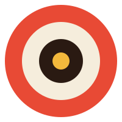
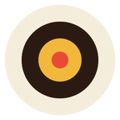

SCRIPT
46 beats · Bible built
DONE


An AI filmmaking tool with a concession-stand heart. Playful retro, modern bones.
Direkta is a tool for filmmakers — but it is itself a film of a kind. The brand sits between two poles: vintage cinema poster on one side, modern product chrome on the other. Pick one, never both.
Cream over cocoa. Tomato and mustard and viridian. Chunky Bagel Fat One headlines. Pillow shadows, no harsh outlines. A tilted card. The vibe of a 1960s drive-in snack bar, run by a sound mixer.
No film-negative blacks. No Anton-condensed all-caps technical labels. No sharp 90° corners on cards. No neon glow effects. We left the dark-film identity behind in v0; this is its replacement.
A concentric lens — film reel, camera iris, and "now showing" target dot. Four rings: cocoa outer, cream gap, mustard inner, tomato lens. Paired with the Bagel Fat One wordmark.
Reserve a margin equal to the radius of the lens mark's outer ring around every side. Nothing — text, edge, other graphic — may enter that zone.
Full minimum-size table in logo/README.md.
Five core tones. Cream is the page. Cocoa is the ink. Tomato, mustard, and viridian are the only colours that mean anything — they map to danger, in-progress, and success respectively. Use them on purpose.
Three families. Bagel Fat One for headlines, Nunito for body, JetBrains Mono for eyebrows and timecodes. Mixing within a single word is forbidden.
A small library. Live examples and copy-paste markup in components/examples.html.
Tilts left, 0.6°
Tilts right, 0.5°
Gentlest, 0.3°
Everything above, composed. This is what the product looks like when you wire it all together.
An ex-spy returns to Portugal to settle a debt — and finds his daughter waiting at the table.
46 beats · Bible built
4 of 6 souls trained
15 of 47 frames
Locked — needs boards
Locked — needs stitch
Direkta moves with soft spring. No linear easings; nothing snaps; nothing slides. Three durations, three easings — pick by the size of the change.
| Token | Value | Use for |
|---|---|---|
| --dur-1 | 120ms | Micro — hover lifts, focus rings, pip pulses |
| --dur-2 | 220ms | Standard — card hovers, tab switches, modal fade |
| --dur-3 | 360ms | Macro — modal pop, page enter, drawer open |
| --dur-4 | 520ms | Hero — splash, on-load reveal |
| --ease-out | cubic-bezier(0.22, 0.61, 0.36, 1) | Default — content arriving |
| --ease-in | cubic-bezier(0.55, 0.06, 0.68, 0.19) | Content leaving |
| --ease-spring | cubic-bezier(0.34, 1.56, 0.64, 1) | Modal pop, success states |
Cards lift on hover (translateY −2px + shadow step). Lists stagger in at 60ms per item. The working pip pulses at 1.4s. Full keyframes in motion/motion.css.
The fast version of every rule above.
Cream (#F5EDDC) is the canvas. Cards sit on it in warm white (#FFFBF1). Cocoa (#2A1A12) is for text and the occasional inverted card.
White on cream reads cold and clinical. Warm white (--surface, #FFFBF1) is the only "almost white" we use.
Dashboard pipeline, library grids, quick-access rows — apply card-tilt-a/b/c in rotation. The ±0.3°–0.6° rhythm is the brand's signature.
Functional surfaces stay straight. Tilt is for content cards in a row — never for interactive form elements or single-focus dialogs.
Three depths: --shadow-1, -2, -3. Always layered (close + far). Never offset block; never harsh.
Outline weight is 0 in this brand. Definition comes from shadow + colour contrast. The only hairlines allowed are inside inputs and dividers.
Tomato = danger / CTA. Mustard = in-progress. Viridian = success / complete. Don't reach for accent colours decoratively.
Flat colours only. The brand is bold and confident — gradients muddy the silhouette and signal "AI slop" instantly.
How to bring this brand into a new codebase. Everything you need is in /brand — start with README.md.
Single source of truth for every colour, type size, radius, shadow, and motion curve.
<link rel="stylesheet" href="brand/tokens/tokens.css">
Bagel Fat One, Nunito, JetBrains Mono. Loaded via the @import in tokens.css, or use a <link> — see type/README.md.
<link rel="stylesheet" href="brand/type/type-scale.css"> <link rel="stylesheet" href="brand/components/components.css"> <link rel="stylesheet" href="brand/motion/motion.css">
Default brand mark — drop into any nav bar.
<img src="brand/logo/primary-lockup.svg"
alt="Direkta"
style="height: 36px;">
Open brand/components/examples.html in a browser. Every component the system ships, rendered live with copy-paste markup. Class names match the CSS exactly.
brand/
├── README.md ← start here
├── Brand Guide.html ← this document
├── tokens/
│ ├── tokens.css ← single source of truth
│ └── tokens.json ← machine-readable
├── logo/
│ ├── README.md ← usage rules + minimums
│ ├── primary-lockup.svg ← default
│ ├── primary-lockup-cream.svg
│ ├── primary-lockup-color.svg
│ ├── logomark.svg ← mark alone
│ ├── logomark-cream.svg
│ ├── logomark-tomato.svg
│ ├── logomark-mono.svg
│ ├── wordmark.svg
│ └── wordmark-cream.svg
├── type/
│ ├── README.md
│ └── type-scale.css
├── components/
│ ├── README.md
│ ├── components.css
│ └── examples.html
└── motion/
├── README.md
└── motion.css